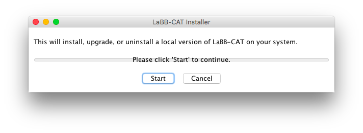

1 - Install and Configure LaBB-CAT
In this exercise you will:
- Install the LaBB-CAT software
- Define corpora
- Define transcript types
After this you will have an empty LaBB-CAT database set up ready to upload transcripts into.
Installation
You should only follow these steps if you will be running LaBB-CAT on your own computer.
If you are using a LaBB-CAT server that’s already been installed for you elsewhere, you can skip to Setup below.
- You have a file called install-labbcat.jar - double click this file to start the installer.
On Mac OS X you may see a message that the file can’t be opened: 
If this happens:
- Click the Apple icon in the top left corner of the screen.
- Select System Preferences
- Click Security & Privacy
Near the bottom it says “install-labbcat.jar” was blocked from opening because it is not from an identified developer.

- Click Open Anyway
You may see another warning about the program being downloaded from the internet

- Click Open

- Click Start
You will see the progress bar move as files are installed. Once this is finished, you’ll see a message saying “Installation complete.”
- Click Finished to close the installer
The software is now installed. LaBB-CAT is a browser-based system, which means that it works as a mini web server on your computer, and you need to access it using your web browser.
Each time you want to use LaBB-CAT, you must start it up, and which you’ve finished, you close it down again.
To start LaBB-CAT, click the LaBB-CAT icon in your applications area.
- On Windows, open the Start menu and type LaBB-CAT.
- On OS X you will find LaBB-CAT in your Applications folder.
A window called “LaBB-CAT Server” will open, and after a short delay, your default web browser will open on a page called “LaBB-CAT”.
Setup
Now we will set up a basic structure for receiving data:
- Open your web browser on LaBB-CAT’s start page.
- The very first time the page opens, you will see the software’s licence. Press I Agree to access the start page.
- The start page has a link on it called “Where do I start?” - you may like to click on this link and read the first section, which explains a little about how to navigate around LaBB-CAT and where to find online help and hints.
- Click back on the start page of LaBB-CAT (the page with the “Where do I start?” link).
Now we will set up some corpus names…
- On the menu at the top, select the corpora link.
This page shows a list of current corpora, which only contains one corpus, called corpus. - The column headings at the top, Name, Language, and Description, also make a form you can fill in to create a new corpus. Fill in the following information:
- Name:
QB - Language: English
- Description:
Quakebox recordings
- Name:
- Press the New button on the right to add the QB corpus.
You should see a message at the top of the page saying “Record created” and now the QB corpus is in the list, under the corpus corpus. - Add another corpus called
UCwith the descriptionCampus recordings - We won’t actually be using the corpus called corpus, so we want to delete it. To do this, press the Delete button to the right of the ‘corpus’ corpus in the list.
- You will be asked “Are you sure you want to delete this record?”
You are sure, so press OK
The row will be deleted from the list.
Now you have some corpora set up with the names you’ve provided.
The data we are using is a collection of stories about peoples’ experiences during the devastating earthquakes that hit the Canterbury region of New Zealand in 2010 and 2011. Some recordings are interviews, where an interviewer asks the participant questions, and others are monologues. Now we’re going to set up these two transcript types …
- Select on the transcript types menu option.
You will see a list of transcript types, although there’s currently only one type in the list, called ‘interview’. - Above this, fill in the empty Type box with the word:
monologue - Press the New button on the right.
You will notice that now the list has two transcript types, interview and monologue. - Press the Save button that has appeared below the other buttons to confirm this change.
You will see a message at the top saying “Updated transcript types”.
Now you have an empty database for which you’ve:
- created two corpora, QB and UC, and
- created a new transcript type, so that we can have monologues as well as interviews.